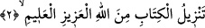
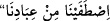

ümmetsiniz.
Bir başka yerde şöyle buyurur: /Biz kullarımızdan seçtik. Bu hitâbın
altında hem zâhid hem âbid vardır. Hem zâlim hem mazlum vardır.
Rivayete göre Mûsâ (a.s.) Cenâb-ı Hakk’a: “Yâ Rabbi! Hiç bana bulunduğun kadar
bir başkasına ikramda bulundun mu? Zira bana kendi kelâmını bizzat işittirdin” demişti.
Allah Teâlâ cevâben şöyle buyurdu: “Benim âhir zamanda yaratacağım birtakım
kullarım vardır ki onlara Ramazan ayını ikram edeceğim ve ben onlara sana
olduğumdan çok daha yakın olacağım. Şunu bil ki, seninle, aramızda yetmiş bin perde
olduğu halde konuşmuştuk. Oysa ümmet-i Muhammed oruç tutup da dudakları bembeyaz,
renkleri sapsarı kesildiği zaman, iftar ettiklerinde onlardan bütün perdeleri kaldırırım.”
[Senâî der ki:]
Başını perdeden çıkaracağın gün,
Zamâneyi hor ve zelîl edeceksin.
Güzellik ve cemâli bu hâlinden daha da artırırsan
Ey Rabbim hangi ciğerleri kana bulayacaksın.
“Mûsâ! Ne mutlu, Ramazan’da ciğerleri susuzluk çekip karınları acıkanlara! Onları
ancak ve ancak kendi likâmla mükâfatlandıracağım. Onların oruçlu ağızlarının kokusu
benim katımda misk kokusundan daha hoştur. Tek bir gün oruç tutan, hiç bir gözün
görmediği, hiçbir kulağın duymadığı, hiçbir beşerin aklına gelmeyen şeyleri hak etmiş
olur.”
Bunun üzerine Hz. Mûsâ: “Ya Rab! Ramazan’ı bana da ikrâm ediver” diye niyazda
bulunduysa da Yüce Allah: “Bu, Ümmet-i Muhammed’e mahsus bir özelliktir”
buyurmuştur.
Cenab-ı Hakk’ın şu ümmete olan ikrâmına ve bu ümmet-i merhûmeyi ne kadar
gözettiğine bir bakın! Bütün ümmetler arasında böyle bir değerle sadece o ümmet
muttasıf bulunmaktadır. Daha da ötesi, diğer bütün ümmetler böyle bir nimetten mahrum
durumdadır.
2. Bu Kitap mutlak gâlip, hakkıyla bilen, Allah tarafından indirilmiştir.
“Bu Kitap,” kâfirlerin dediği gibi Muhammed’in uydurduğu bir şey olmayıp “mutlak
gâlip, hakkıyla bilen Allah tarafından indirilmiştir.”
“Tenzîl” mübâlağa ile indirilmiş demektir. Burada Allah Tealâ için özellikle
“Azîz/mutlak gâlip ve Alîm/hakkıyla bilen” vasıflarının zikredilmesi, muhtemelen
Kur’an’ın i’câz husûsiyeti ve ihtivâ ettiği pek çok ilimle alakalı olup Allah Teâlâ’nın